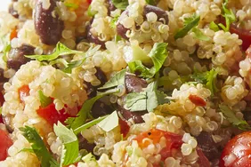

Zesty Quinoa Salad

Description
This quinoa salad is a great summertime recipe (or anytime you want
to feel like it's summertime). Light and citrusy, it's a whole new way to enjoy quinoa.
Lime juice and cilantro give a refreshing kick, while quinoa and black beans provide
tasty vegan protein. If you're not vegan, add even more protein by adding chunks of
chicken or turkey. This salad tastes great right away and even better the next day
when all the flavors have had the chance to marry.
Ingredients
- 2 cups water
- 1 cup quinoa
- ¼ cup extra-virgin olive oil
- 2 limes, juiced
- 2 teaspoons ground cumin
- 1 teaspoon salt
- ½ teaspoon red pepper flakes, or more to taste
- 1 ½ cups halved cherry tomatoes
- 1 (15 ounce) can black beans, drained and rinsed
- 5 green onions, finely chopped
- ¼ cup chopped fresh cilantro
- salt and ground black pepper to taste
Steps
- Bring water and quinoa to a boil in a saucepan. Reduce heat to medium-low, cover, and simmer until quinoa is tender and water has been absorbed, 10 to 15 minutes. Set aside to cool.
- Meanwhile, whisk olive oil, lime juice, cumin, salt, and red pepper flakes together in a small bowl.
- Combine quinoa, tomatoes, black beans, and green onions in a large bowl. Pour dressing over quinoa mixture; toss to coat. Stir in cilantro; season with salt and black pepper. Serve immediately or chill in the refrigerator.